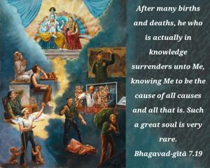
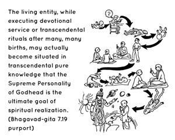

After many births and deaths, he who is actually in knowledge surrenders unto Me, knowing Me to be the cause of all causes and all that is. Such a great soul is very rare.


The living entity, while executing devotional service or transcendental rituals after many, many births, may actually become situated in transcendental pure knowledge that the Supreme Personality of Godhead is the ultimate goal of spiritual realization. In the beginning of spiritual realization, while one is trying to give up one’s attachment to materialism, there is some leaning towards impersonalism, but when one is further advanced he can understand that there are activities in the spiritual life and that these activities constitute devotional service. Realizing this, he becomes attached to the Supreme Personality of Godhead and surrenders to Him. At such a time one can understand that Lord Śrī Kṛṣṇa’s mercy is everything, that He is the cause of all causes, and that this material manifestation is not independent from Him. He realizes the material world to be a perverted reflection of spiritual variegatedness and realizes that in everything there is a relationship with the Supreme Lord Kṛṣṇa. Thus he thinks of everything in relation to Vāsudeva, or Śrī Kṛṣṇa. Such a universal vision of Vāsudeva precipitates one’s full surrender to the Supreme Lord Śrī Kṛṣṇa as the highest goal. Such surrendered great souls are very rare.
This verse is very nicely explained in the Third Chapter (verses 14 and 15) of the Śvetāśvatara Upaniṣad:
sahasra-śīrṣā puruṣaḥ
sahasrākṣaḥ sahasra-pāt
sa bhūmiṁ viśvato vṛtvā-
tyātiṣṭhad daśāṅgulam
puruṣa evedaṁ sarvaṁ
yad bhūtaṁ yac ca bhavyam
utāmṛtatvasyeśāno
yad annenātirohati
“Lord Viṣṇu has thousands of heads, thousands of eyes and thousands of feet. Entirely encompassing the whole universe, He still extends beyond it by ten fingers’ breadth. He is in fact this entire universe. He is all that was and all that will be. He is the Lord of immortality and of all that is nourished by food.” In the Chāndogya Upaniṣad (5.1.15) it is said, na vai vāco na cakṣūṁṣi na śrotrāṇi na manāṁsīty ācakṣate prāṇa iti evācakṣate prāṇo hy evaitāni sarvāṇi bhavanti: “In the body of a living being neither the power to speak, nor the power to see, nor the power to hear, nor the power to think is the prime factor; it is life which is the center of all activities.” Similarly Lord Vāsudeva, or the Personality of Godhead, Lord Śrī Kṛṣṇa, is the prime entity in everything. In this body there are powers of speaking, of seeing, of hearing, of mental activities, etc. But these are not important if not related to the Supreme Lord. And because Vāsudeva is all-pervading and everything is Vāsudeva, the devotee surrenders in full knowledge (cf. Bhagavad-gītā 7.17 and 11.40).